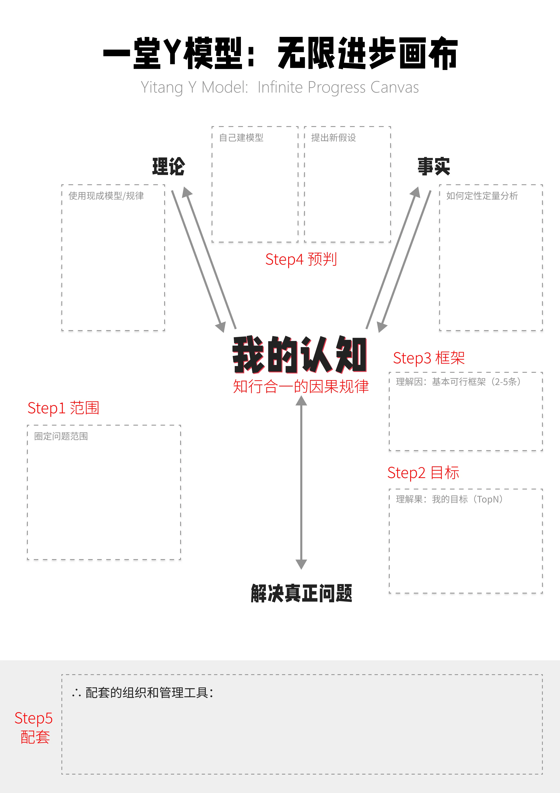

web3-learn 教程 · 五步法 · 周复盘
WEEKLY · 复盘模板
周日 30 分钟，把"预判进步"变成固定动作
复盘会不需要写代码，只需要打开这个页面，挨个回答四个必答问题。手感信号对比是 12 周进步的硬证据。下方集成 Markdown 编辑器，输入与预览左右对照；自动保存草稿到本地。
💡 第一次用？点我看这份页面的全部能力（90 秒读完）
📅 周次联动
顶部选周次 → 下方所有数据只对应当周；换周次 = 换一份独立草稿。
📏 评分锚点
手感 1-5 分、信号 1-5 分都有"什么分 = 什么水平"对照表，避免主观漂浮。
📊 完成度进度条
实时显示本周复盘是否填全（5 项），100% 才能归档。
📦 归档 + 12 周历史
每周点「归档本周到历史」累积分周数据，凑满 12 周自动渲染趋势折线图。
↪ 一键下周模板
填完本周后点「生成下周模板」——自动归档本周 + 清投票/手感 + 预填下周骨架。
⌘B / ⌘I / ⌘K / ⌘S
键盘快捷键：粗体 / 斜体 / 行内代码 / 手动保存，写 Markdown 不再切鼠标。
📅 你正在复盘的是
开篇
月回顾
季复盘
投递

① 周复盘 Markdown 主区
左编辑、右预览；常用格式工具栏；自动保存到 localStorage，刷新页面不丢。
编辑 · Markdown就绪
预览 · 渲染0 字 / 0 行
Markdown 速查
# H1## H2### H3
**粗体***斜体*~~删除~~
[文字](https://...)
- 列表1. 有序- [x] 任务
> 引用--- 分隔
`行内````代码块```
② 手感信号 1-5 分对比
从 STEP 4 手感信号表选 3-5 条做对比。悬停行名看评分锚点——避免主观漂浮。
📏 1-5 分评分锚点（点击折叠）
0
完全没出现
本周完全没接触，或没意识到
1
有意识
接触过但没形成判断，需查文档
2
能用
能在指导下完成，需要时还卡顿
3
独立完成
不用查文档，能独立写完
4
能讲清
能给别人讲清边界与陷阱
5
像呼吸
完全自动化，能反向设计教学
使用建议：每周只对比 3-5 条（不要全填），聚焦你想重点练的维度；连续两周 ↓ 的维度，下周要重新看一遍配套（STEP 05）。
| 手感信号 | 上周 | 本周 | 趋势 |
|---|---|---|---|
| 并发手感 | — | ||
| 链上手感 | — | ||
| 安全手感 | — | ||
| 幂等手感 | — | ||
| 对账手感 | — | ||
| Gas 策略 | — | ||
| 事件订阅 | — |
↑/→/↓ 自动计算；连续两周 ↓ 的维度，下周要重新看一遍配套。
📈 12 周手感趋势（点击展开 · 自动从 localStorage 读历史）
怎么用：这条曲线是 12 周复盘的累积产物。斜率比绝对值更重要——稳 ↑ 即便分数不高也说明方向对，持续平意味着方法需要换。
③ 四类信号投票（1-5 分）
STEP 4 的 A / B / C / D 信号本周各打几分？悬停卡片看评分锚点——避免主观漂浮。
0
A · 定性定量
本周记录数字/截图/录音
0 感觉 → 1 数字 → 3 截图 → 5 数据图
0
B · 科学类比
借到 N 个有效类比
0 圈外 → 1 借 1 → 3 啊哈 → 5 体系化
0
C · 假设驱动
证伪 N 个原假设
0 经验 → 1 想法 → 3 实验 → 5 自推翻
0
D · 提炼建模
抽象 N 条经验
0 脑子 → 1 文字 → 3 图表 → 5 框架
尚未投票
投票规则：四类信号全 ≥ 3 才算"本周能力上台阶"；任一信号 ≤ 1 视为"信号盲区"，下周补哪类。
④ 数据导出
复盘完成三件事后再关页面：① 复制 Markdown ② 导出 .md 文件 ③ 投票与手感数据另存为 JSON。
🗂 12 周历史归档